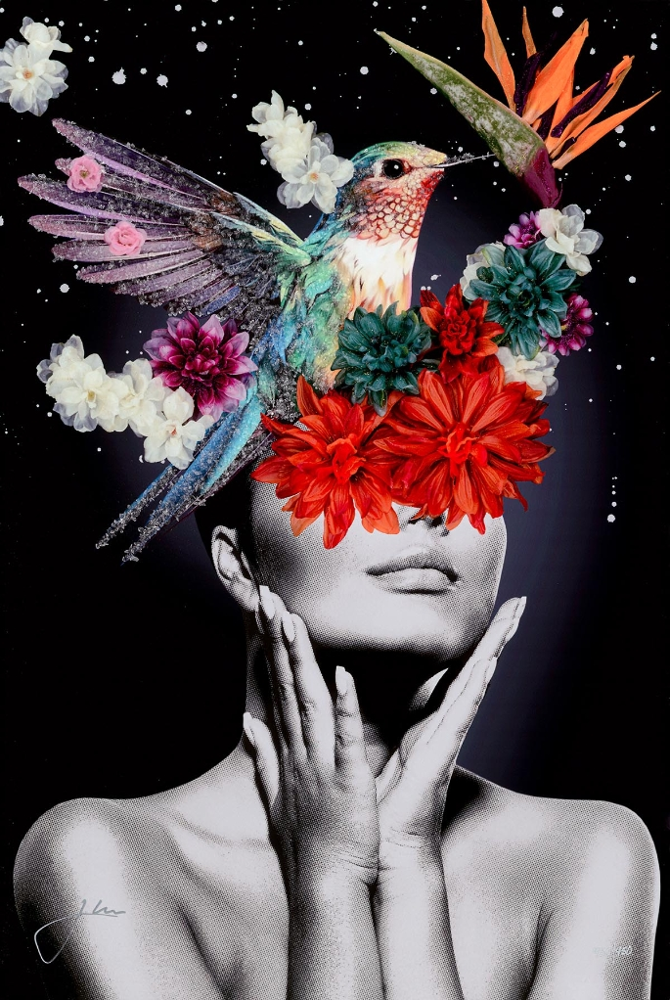

Be Still Be Free

Description:
In “Be Still Be Free,” Jay Bonadio presents a captivating meditation on serenity and the liberation of the mind. The artwork features a striking, high-contrast monochrome portrait of a woman in a contemplative pose, her hands gently resting on her face. Rendered in a classic halftone style, she serves as the grounding force of the piece—the “Still.”
Exploding from her vision is the “Free”—a vibrant, chaotic, and beautiful arrangement of flora and fauna that replaces her physical sight with boundless natural energy. A magnificent hummingbird, encrusted in Bonadio’s signature crushed glass and resin, takes flight from a bouquet of red dahlias, succulents, and a striking bird of paradise. The bird’s wings shimmer with a diamond-like texture, catching the light and creating a sense of movement that contrasts with the stillness of the muse.
Set against a deep black background speckled with stardust, the piece suggests that true freedom comes when we close our eyes to the noise of the world and allow our inner garden to bloom. It is a masterclass in texture, balancing the flat graphic nature of the print with the heavy, gem-like relief of the glasswork.
Artwork Details:
- Medium: Mixed Media, Crushed Glass, and Resin on Board
- Style: Pop Surrealism / Contemporary Portraiture
- Key Elements: Hummingbird, floral “blindfold” (Dahlias, Bird of Paradise), halftone portrait, stardust background
- Signature: Hand-signed by the artist (Bottom Left)
- Dimensions
- 24 in x 16 in
- Reg. / Lot No.
- 763660